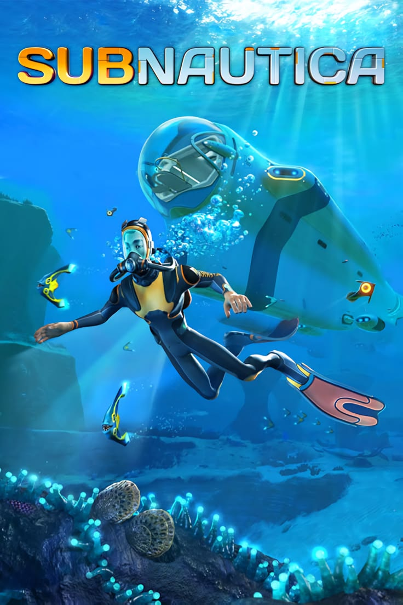
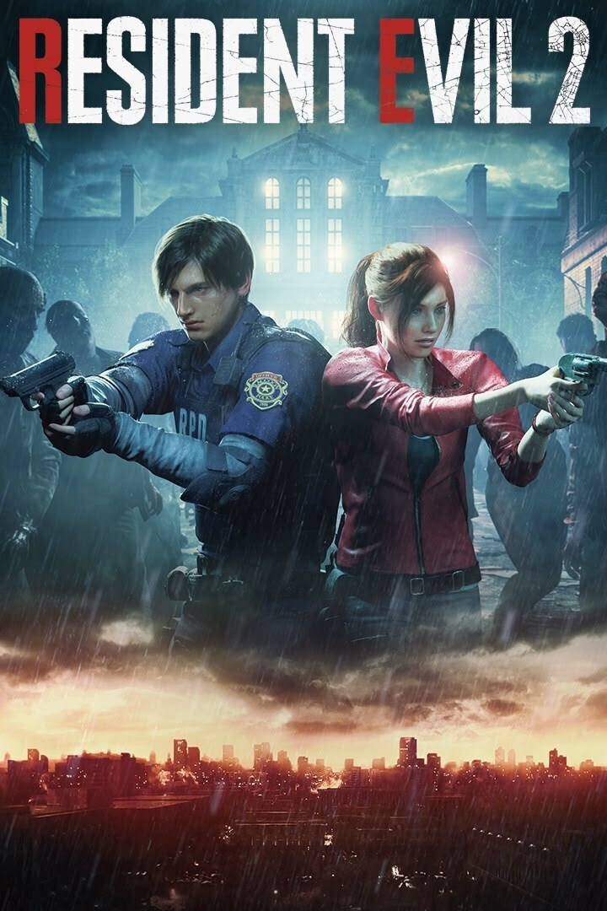

Elden Ring

Elden Ring es un juego de rol de acción desarrollado por FromSoftware y publicado por Bandai Namco Entertainment. Fue lanzado en febrero de 2022 y ha recibido elogios por su mundo abierto, su jugabilidad desafiante y su narrativa envolvente.
Subnautica

Subnautica es un juego de supervivencia submarina desarrollado por Unknown Worlds Entertainment. Ambientado en un mundo oceánico, el juego ofrece una experiencia inmersiva con una narrativa profunda y opciones de personalización para los jugadores.
ARK: Survival Evolved

ARK: Survival Evolved es un juego de supervivencia desarrollado por Studio Wildcard. Ambientado en un mundo prehistórico, el juego ofrece una experiencia inmersiva con una narrativa profunda y opciones de personalización para los jugadores.
Ghost of Tshushima

Ghost of Tshushima es un juego de acción desarrollado por Sucker Punch Productions. Ambientado en la Japón feudal, el juego ofrece una experiencia inmersiva con una narrativa profunda y opciones de personalización para los jugadores.
Resident Evil 2 Remake

Resident Evil 2 Remake es un juego de terror y acción desarrollado por Capcom. Ambientado en un pueblo rural de España, el juego ofrece una experiencia inmersiva con una narrativa profunda y opciones de personalización para los jugadores.
Red Dead Redemption 2

Red Dead Redemption 2 es un juego de acción y aventura desarrollado por Rockstar Games. Ambientado en el oeste salvaje del siglo XIX, el juego ofrece una experiencia inmersiva con una narrativa profunda y opciones de personalización para los jugadores.